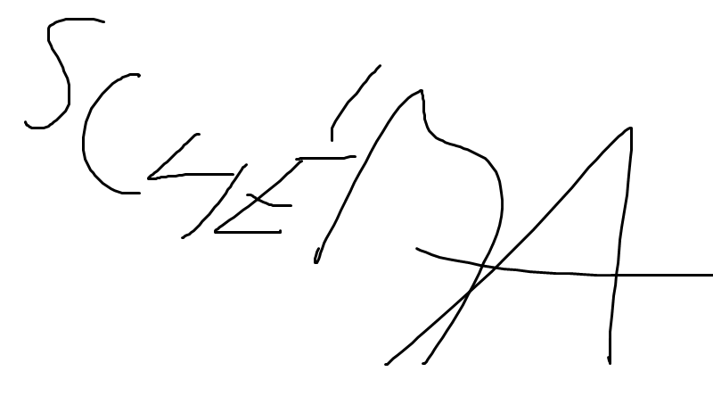

Subnetting
Rozdělte síť {{baseIP}} na podsítě dle následujícího schématu:
| Název | Počet hostů | Zadaná Adresa |
Adresa správně |
Zadaný Broadcast |
Broadcast správně |
Zadaný Prefix |
Prefix správně |
| {{item.name}} | {{item.hosts}} | {{item.firstA}} | {{item.lastA}} | {{item.prefix}} |